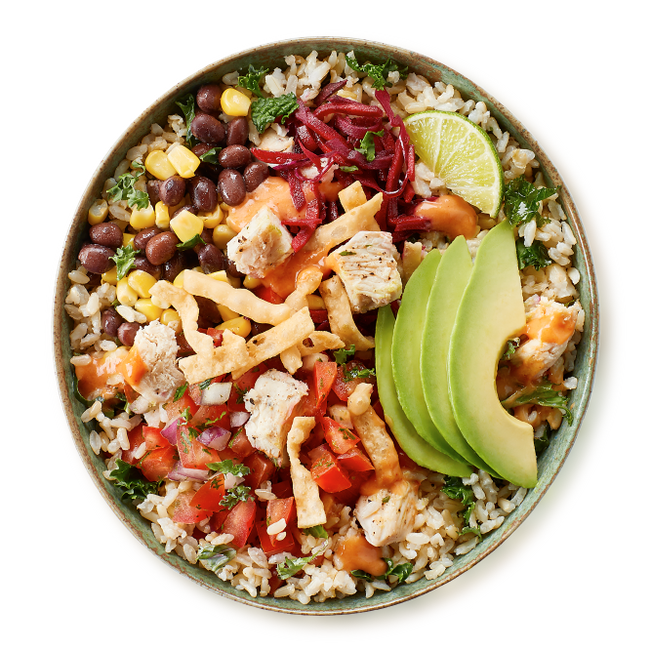

Chirpz Chicken
Chirpz Fried Chicken is situated in Tofino’s town centre,
at the very end of Campbell Street. Find them
in a grouping of six container businesses, with some outdoor seating.
See More

RedCan Gourmet
Freshmade Gourmet take-out foods that showcase Vancouver Island farmers. Chef May has created a culinary niche that will tantalize everyone’s tastebuds. Stop by Industrial Way and pick up some homemade pasta and sauces, a variety of salads, artisan pizzas. The menu changes daily, come fill your picnic basket for your lunch excursion. Chef May also caters private functions.
See More

Buddha's Satay Bowl or Burrito (Vegan option)
rice noodles*, crispy lentils, carrots, broccoli, cabbage, green onions, peanut sauce(*brown rice in burri contains: soy,peanuts, sesame. Burrito contains gluten - wheat.
See More